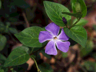
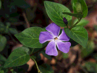

brighten on "shed.bmp" (resulting images not in original resolution)

brighten on "flower.bmp"
factor = 0

factor = 0.5

factor = 1

factor = 2

3.2.1 brighten
brighten on "shed.bmp" (resulting images not in original resolution)
brighten on "flower.bmp"
factor = 0
factor = 0.5
factor = 1
factor = 2
3.2.2 change contrast
contrast on "shed.bmp" (resulting images not in original resolution)
contrast on "flower.bmp"
factor = -1

factor = 0

factor = 0.5

factor = 1

factor = 2
3.2.3 change saturation
saturation on "shed.bmp" (resulting images not in original resolution)
saturation on "flower.bmp"
factor = -1

factor = 0

factor = 0.5

factor = 1

factor = 2
3.2.4 change gamma
gamma on "shed.bmp" (resulting images not in original resolution)

gamma on "flower.bmp"
factor = 0

factor = 0.5

factor = 1

factor = 2

3.2.5 crop
crop on "shed.bmp" (resulting images not in original resolution)

cropping "flower.bmp"
original

cropped (x = 60, y = 40, w = 60, h = 60)
cropping one punch man
original

cropped (x = 150, y = 0, w = 160, h = 200)

3.3 quantize & dithering
dithering on "flower.bmp" (resulting images not in original resolution)
same table as above, but with the images at their original resolution

 
